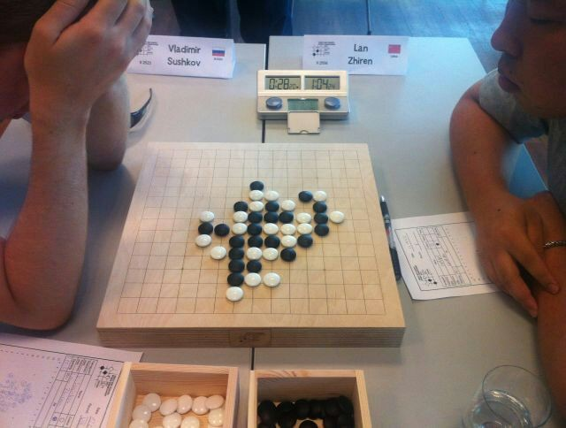

托姆别阿的城墙上 你可曾看到古城千年的历史
#1 托姆别阿的城墙上 你可曾看到古城千年的历史作者：屏蔽 发表时间：2013-8-12 7:59:22
今日第八、九轮……
兰志仁 3.5 第7 今日对阵：Sushkov、大角有希 我勒个去鸭梨山大
曹 冬 3.0 第9 今日对阵：Salnikov、Aivo 围观冬瓜战Aivo胖瘦对决
汪清清 1.0 第11 今日对阵：Epifanov、Salnikov 赛程比较轻松 相对
［ 与郎共五同学于 2013-8-12 10:41:35 时花20金币送鲜花一朵］
［ 与郎共五同学于 2013-8-12 10:41:35 时花20金币送鲜花一朵］
［ 与郎共五同学于 2013-8-12 10:41:35 时花20金币送鲜花一朵］
#2 Re:托姆别阿的城墙上 你可曾看到古城千年的历史作者：屏蔽 发表时间：2013-8-12 8:00:56
白天我要上班 晚上我也有事 不过今天毕竟轻松点 有空会来更新#3 Re:托姆别阿的城墙上 你可曾看到古城千年的历史作者：小丸.net 发表时间：2013-8-12 9:19:48
火前留名
#4 Re:托姆别阿的城墙上 你可曾看到古城千年的历史作者：伤情路 发表时间：2013-8-12 9:25:45
火钳占座
#5 Re:托姆别阿的城墙上 你可曾看到古城千年的历史作者：小红眼镜 发表时间：2013-8-12 9:40:50
金币我来啦啊啊#6 Re:托姆别阿的城墙上 你可曾看到古城千年的历史作者：奇林 发表时间：2013-8-12 12:05:05
紫禁城脚下 你可曾记得世团第10轮兰志仁展现出了他不是兰志仁的一面.........
#7 Re:托姆别阿的城墙上 你可曾看到古城千年的历史作者：屏蔽 发表时间：2013-8-12 12:15:52
那时的兰志仁一定不是真正的兰志仁！#8 Re:托姆别阿的城墙上 你可曾看到古城千年的历史作者：我菜菜 发表时间：2013-8-12 12:52:36
帖子主题名称风骚的很~~#9 Re:托姆别阿的城墙上 你可曾看到古城千年的历史作者：釣鱼岛岛主 发表时间：2013-8-12 13:02:47
题如其人#10 Re:托姆别阿的城墙上 你可曾看到古城千年的历史作者：屏蔽 发表时间：2013-8-12 13:03:20
9楼说得对！#11 Re:托姆别阿的城墙上 你可曾看到古城千年的历史作者：屏蔽 发表时间：2013-8-12 13:03:49
这种诗情画意的境界 正是我心灵的真实反映#12 Re:托姆别阿的城墙上 你可曾看到古城千年的历史作者：屏蔽 发表时间：2013-8-12 13:04:20
还有一个小时就要开赛了 大家有什么想对参赛选手说的吗#13 Re:屏蔽【==Re:托姆别阿的城墙上 你可曾看到古城千年的历史==】作者：奇林 发表时间：2013-8-12 13:09:07
引用：那绝对不是他 那是另一个人灵魂附体下出来的棋
原文由 屏蔽 发表于 2013-8-12 12:15:52 :
那时的兰志仁一定不是真正的兰志仁！
#14 Re:屏蔽【==Re:托姆别阿的城墙上 你可曾看到古城千年的历史==】作者：奇林 发表时间：2013-8-12 13:09:50
引用：我想对兰志仁说 又一次对大角 希望你再次灵魂附体
原文由 屏蔽 发表于 2013-8-12 13:04:20 :
还有一个小时就要开赛了 大家有什么想对参赛选手说的吗
［此帖子已被 奇林 在 2013-8-12 13:10:16 编辑过］
#15 Re:托姆别阿的城墙上 你可曾看到古城千年的历史作者：釣鱼岛岛主 发表时间：2013-8-12 13:10:15
什么棋？求科普。#16 Re:釣鱼岛岛主【==Re:托姆别阿的城墙上 你可曾看到古城千年的历史==】作者：奇林 发表时间：2013-8-12 13:12:54
引用：我正准备给你找科普资料时 发现 现在 上不去 renju.net 了
原文由 釣鱼岛岛主 发表于 2013-8-12 13:10:15 :
什么棋？求科普。

#17 Re:托姆别阿的城墙上 你可曾看到古城千年的历史作者：屏蔽 发表时间：2013-8-12 13:14:18
iwzq上有那盘棋#18 Re:托姆别阿的城墙上 你可曾看到古城千年的历史作者：屏蔽 发表时间：2013-8-12 13:14:46
我也上不去了 莫非这轮直播要黄？#19 Re:釣鱼岛岛主【==Re:托姆别阿的城墙上 你可曾看到古城千年的历史==】作者：奇林 发表时间：2013-8-12 13:20:44
引用：
原文由 釣鱼岛岛主 发表于 2013-8-12 13:10:15 :
什么棋？求科普。
qplist.asp?qpid=6083&menu=4&returnmenu=5
科普啦 科普啦
#20 Re:托姆别阿的城墙上 你可曾看到古城千年的历史作者：屏蔽 发表时间：2013-8-12 13:38:14
我今天难得清闲 结果renju.net搞罢工 这样吧 请大家将自己想象中的棋谱上传上来大家一起评价……#21 Re:托姆别阿的城墙上 你可曾看到古城千年的历史作者：一休哥 发表时间：2013-8-12 14:46:42
前方消息：目前renju.net出现故障，正在紧急维护中，组委会目前也无法登陆更新相关信息。看看维护多长时间吧，实在不行就我给大家做棋谱直播#22 Re:托姆别阿的城墙上 你可曾看到古城千年的历史作者：萧翎 发表时间：2013-8-12 15:07:48
谢谢，目前前方如何？我军形势如何？谢谢一休哥。#23 Re:托姆别阿的城墙上 你可曾看到古城千年的历史作者：奇林 发表时间：2013-8-12 15:10:53
我想知道坦克开到哪了#24 Re:托姆别阿的城墙上 你可曾看到古城千年的历史作者：小丸.net 发表时间：2013-8-12 15:13:38
不如我们来版聊吧。。。。大家YY 猜。
#25 Re:萧翎【==Re:托姆别阿的城墙上 你可曾看到古城千年的历史==】作者：一休哥 发表时间：2013-8-12 15:36:32
稍后我拍照片，这边带电脑进赛场会比较不方便，信号也不稳定，我把对局照片发给萧翎，就是看不到打谱顺序了，大家先将就看。#26 Re:托姆别阿的城墙上 你可曾看到古城千年的历史作者：掌棋如烟 发表时间：2013-8-12 16:48:35
一休哥，你跟组委会说说，他们要是登不上官网，那就暂时来爱5吧^-^#27 Re:托姆别阿的城墙上 你可曾看到古城千年的历史作者：釣鱼岛岛主 发表时间：2013-8-12 16:48:37
曹冬执黑对苏切白
#28 Re:托姆别阿的城墙上 你可曾看到古城千年的历史作者：萧翎 发表时间：2013-8-12 16:52:54
曹冬白棋输的那盘。#29 Re:托姆别阿的城墙上 你可曾看到古城千年的历史作者：釣鱼岛岛主 发表时间：2013-8-12 16:58:04
汪清清黑对Epifanov白
#30 Re:托姆别阿的城墙上 你可曾看到古城千年的历史作者：釣鱼岛岛主 发表时间：2013-8-12 17:01:03
汪清清黑对Epifanov白
#31 Re:托姆别阿的城墙上 你可曾看到古城千年的历史作者：釣鱼岛岛主 发表时间：2013-8-12 17:11:44
大角黑对陈可汗白
#32 re:托姆别阿的城墙上 你可曾看到古城千年的历史作者：小丸.net 发表时间：2013-8-12 17:13:47
现场快递：冈部宽和爱伏下和。。。。汪清清挂了。据说这个5对方已经研究到白必胜。#33 Re:托姆别阿的城墙上 你可曾看到古城千年的历史作者：梧桐风 发表时间：2013-8-12 17:14:23
汪清清是不是到目前为止都是拿黑棋？#34 re:托姆别阿的城墙上 你可曾看到古城千年的历史作者：小丸.net 发表时间：2013-8-12 17:14:29
现场八卦：曹冬下棋太狠，出去抽烟，还有裁判跟着。#35 Re:托姆别阿的城墙上 你可曾看到古城千年的历史作者：萧翎 发表时间：2013-8-12 17:18:46
牛，这个5我以为是平衡。#36 Re:托姆别阿的城墙上 你可曾看到古城千年的历史作者：萧翎 发表时间：2013-8-12 17:18:47
牛，这个5我以为是平衡。#37 re:托姆别阿的城墙上 你可曾看到古城千年的历史作者：小丸.net 发表时间：2013-8-12 17:21:15
现场快递： 陈科瀚可能会挂。#38 Re:托姆别阿的城墙上 你可曾看到古城千年的历史作者：梧桐风 发表时间：2013-8-12 17:21:23
目测可汗会崩#39 Re:托姆别阿的城墙上 你可曾看到古城千年的历史作者：掌棋如烟 发表时间：2013-8-12 17:23:18
看来老外的研究也不差啊#40 Re:托姆别阿的城墙上 你可曾看到古城千年的历史作者：幾 发表时间：2013-8-12 17:29:05
上厕所会不会有人跟着，比赛的时候允许随身带手机吗？#41 re:托姆别阿的城墙上 你可曾看到古城千年的历史作者：小丸.net 发表时间：2013-8-12 17:29:13
大角有希赢了陈科瀚，坦克赢了马丁#42 Re:托姆别阿的城墙上 你可曾看到古城千年的历史作者：梧桐风 发表时间：2013-8-12 17:32:14
其实我想看可汗一路杀到底的。。。
#43 Re:托姆别阿的城墙上 你可曾看到古城千年的历史作者：小丸.net 发表时间：2013-8-12 17:34:39
#44 Re:托姆别阿的城墙上 你可曾看到古城千年的历史作者：幾 发表时间：2013-8-12 17:45:59
这个棋盘真不错，真舍得下血本啊#45 re:托姆别阿的城墙上 你可曾看到古城千年的历史作者：小丸.net 发表时间：2013-8-12 17:47:41
喂，别看棋盘。。。认真看棋。。。。#46 Re:托姆别阿的城墙上 你可曾看到古城千年的历史作者：釣鱼岛岛主 发表时间：2013-8-12 17:49:05
两个坐标都没有#47 re:托姆别阿的城墙上 你可曾看到古城千年的历史作者：小丸.net 发表时间：2013-8-12 18:29:57
兰志仁和苏切打和#48 Re:幾【==Re:托姆别阿的城墙上 你可曾看到古城千年的历史==】作者：一休哥 发表时间：2013-8-12 18:44:20
手机赛前都上交，上厕所没人跟着#49 Re:托姆别阿的城墙上 你可曾看到古城千年的历史作者：一休哥 发表时间：2013-8-12 18:45:23
曹东继续着不到长城非好汉，不下满5小时也遗憾的风格，我们等不起，去吃饭了［此帖子已被 一休哥 在 2013-8-12 18:46:16 编辑过］
#50 Re:托姆别阿的城墙上 你可曾看到古城千年的历史作者：一休哥 发表时间：2013-8-12 19:55:41
曹冬赢了#51 Re:托姆别阿的城墙上 你可曾看到古城千年的历史作者：釣鱼岛岛主 发表时间：2013-8-12 20:41:03
曹冬黑胜Salnikov
［此帖子已被 釣鱼岛岛主 在 2013-8-12 20:58:59 编辑过］
#52 re:托姆别阿的城墙上 你可曾看到古城千年的历史作者：小红眼镜 发表时间：2013-8-12 20:51:05
回楼上，那不是苏切。是Salnikov#53 Re:托姆别阿的城墙上 你可曾看到古城千年的历史作者：釣鱼岛岛主 发表时间：2013-8-12 20:53:12
哦 我分不清#54 Re:托姆别阿的城墙上 你可曾看到古城千年的历史作者：屏蔽 发表时间：2013-8-12 20:53:33
我认为 这是智商问题#55 Re:托姆别阿的城墙上 你可曾看到古城千年的历史作者：釣鱼岛岛主 发表时间：2013-8-12 20:56:24
滚蛋 我是懒得确认，兰志仁这轮对苏切是吗？#56 re:托姆别阿的城墙上 你可曾看到古城千年的历史作者：小丸.net 发表时间：2013-8-12 21:00:23
棋谱库正在直播第9轮比赛。